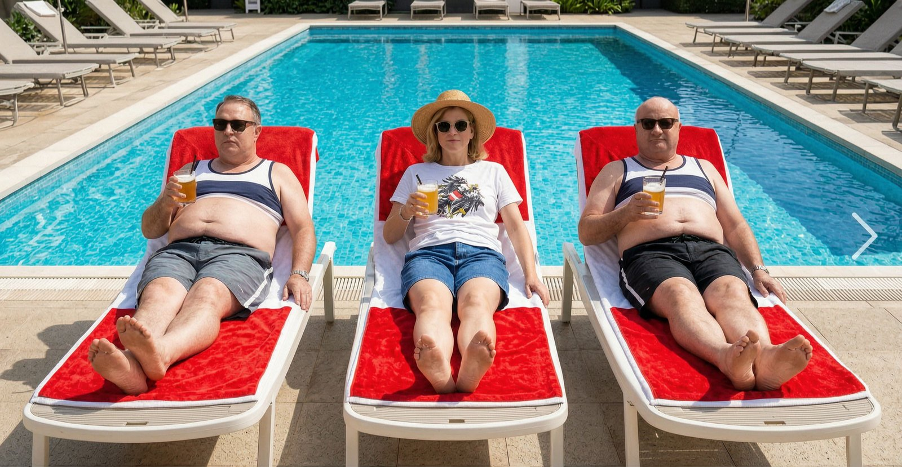

74 Tage Sommerpause

Fünf Sitzungstage am Stück, dann Ruhe: Nach der Budgetwoche verabschiedet sich der Nationalrat in die Sommerpause. Die nächste reguläre Plenarsitzung ist erst für den 23. September angesetzt. Dazwischen liegen 74 sitzungsfreie Tage, so viele wie zuletzt vor 33 Jahren.
Der zeitliche Kontext macht die Zahl pikant. In derselben Woche beschließen die Abgeordneten das Doppelbudget für 2027 und 2028, also den Haushalt in einer Phase, in der von Bürgern an vielen Ecken Konsolidierung verlangt wird. Kaum ist der Sparkurs zu Papier gebracht, folgt die längste Auszeit seit einer Generation. Wer im Land mit 25 Urlaubstagen auskommt, rechnet an dieser Stelle nach.
Ganz stillgelegt wird die Arbeit nicht, und das gehört dazu. Die Ausschüsse nehmen ihre Tätigkeit ab 8. September wieder auf, viele Abgeordnete nutzen die sitzungsfreie Zeit für Termine in den Wahlkreisen, für Bürgergespräche und für die Vorbereitung neuer Initiativen. Von „74 Tage Urlaub" zu sprechen, wäre also falsch. Von einer bemerkenswert langen Pause zu sprechen, ist es nicht.
Sollte keine Sondersitzung einberufen werden, bleibt das Hohe Haus bis Ende September im Ruhemodus. Die Optik dieser Terminplanung ist das eigentliche Thema, und die Optik verwaltet sich schwerer weg als der Kalender.